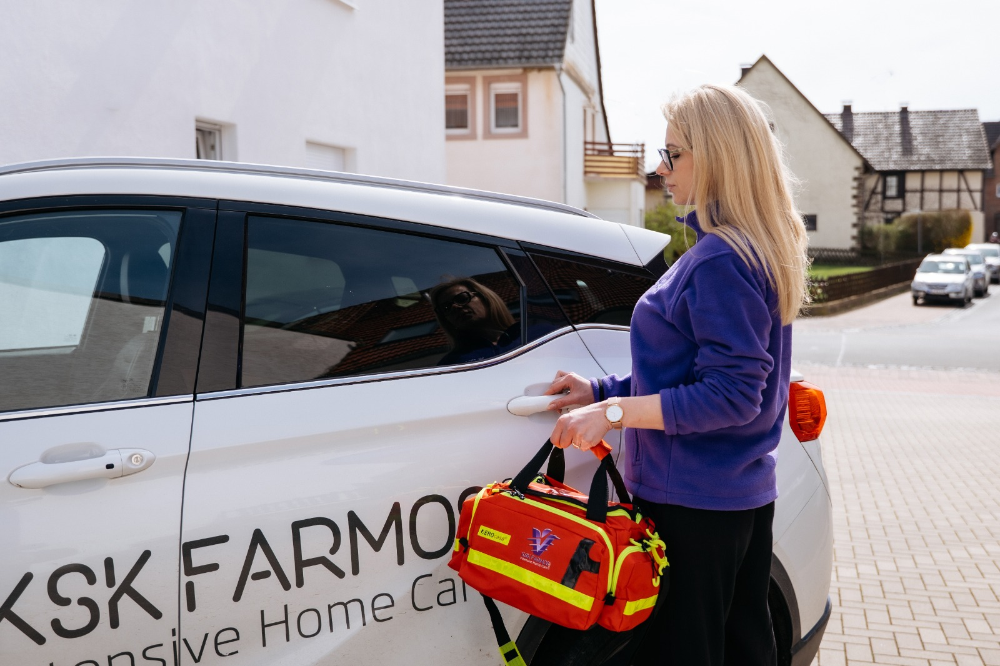
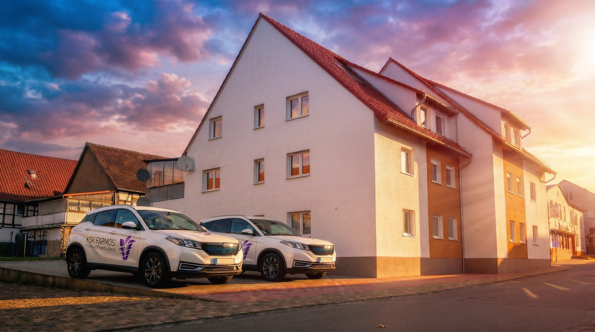

Professionelle Pflege,
die ankommt.
Ambulante Intensivpflege bei Ihnen zu Hause oder in unserer Einrichtung in Kassel — 24 Stunden am Tag, 7 Tage die Woche.
Seit 2013 versorgen wir Menschen mit schweren Erkrankungen in ganz Hessen. Mit durchschnittlich 5,5 Mitarbeitern pro Patient und einem Team aus examinierten Fachkräften garantieren wir eine 24/7-Versorgung auf höchstem Niveau — im eigenen Zuhause oder in unserer Einrichtung in Kassel.
Wie wir helfen

Häusliche Intensivpflege
Professionelle Versorgung in Ihren eigenen vier Wänden — rund um die Uhr.

Aufenthaltskonzept Kassel
Eigenes Zimmer, Garten, Bibliothek und 24h-Betreuung an der Sommerbergstraße 14.

Fort- und Weiterbildungen
Regelmäßige Schulungen durch Fachärzte in 8 medizinischen Fachbereichen.
Wen wir versorgen
- BeatmungspatientenInvasive und nicht-invasive Beatmung
- Wachkoma (Apallisches Syndrom)Langzeitversorgung und Stimulation
- ALS / Neurologische ErkrankungenProgressive Begleitung
- QuerschnittslähmungGanzheitliche Pflege
- Schädel-Hirn-TraumaRehabilitation und Stabilisierung
Das Wohl des Patienten ist oberstes Gesetz.
Unser LeitbildIn 3 Schritten zur Versorgung
Erstes Gespräch
Kostenlos und unverbindlich — wir lernen Ihre Situation kennen und beraten Sie persönlich.
Individuelle Planung
Wir erstellen einen Pflegeplan, stimmen uns mit Ärzten ab und klären die Kostenübernahme.
Versorgungsbeginn
Ihr persönliches Pflegeteam beginnt die Versorgung — professionell und zuverlässig.

Wer wir sind
Der ambulante Intensivpflegedienst KSK Farmos wurde 2013 von Viktor Beresnev in Volkmarsen gegründet. Seitdem versorgen wir Patienten hessenweit — mit Herz, Fachwissen und modernster Ausstattung.
5,5 Mitarbeiter pro Patient — weit über dem Branchendurchschnitt.
Das sagen unsere Patienten
"Sehr kompetentes und einfühlsames Team. Die 24h-Betreuung in Kassel ist eine enorme Entlastung für unsere Familie. Wir fühlen uns perfekt aufgehoben."
"Dank der häuslichen Intensivpflege von KSK Farmos kann mein Vater in seiner gewohnten Umgebung bleiben. Zuverlässig und stets freundlich."
"Vom ersten Gespräch bis zur Umsetzung der Pflege lief alles reibungslos. Die Pflegekräfte sind hochqualifiziert und arbeiten sehr professionell."
Kostenlose Beratung anfragen
Wir beraten Sie persönlich — unverbindlich und kostenfrei.
Beratung anfragenWerden Sie Teil unseres Teams
Übertarifliche Bezahlung, Weiterbildung und Firmenwagen.
Jetzt bewerben